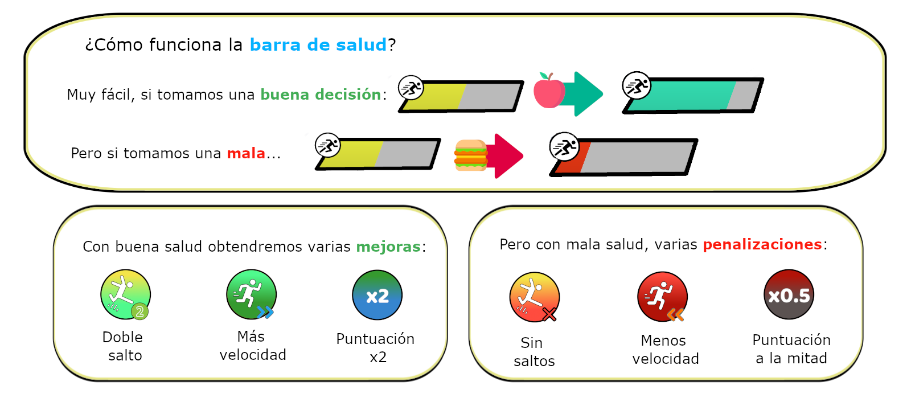
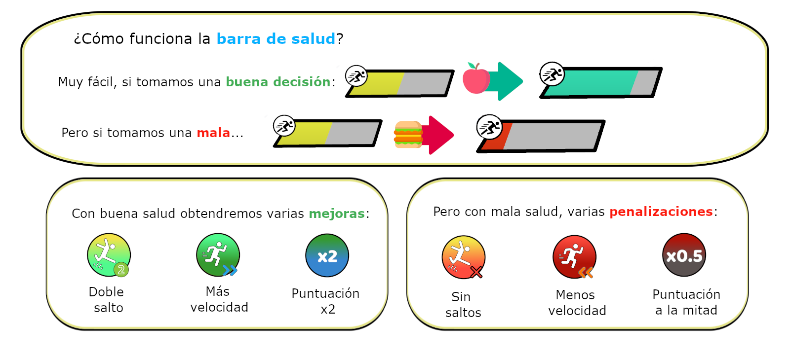
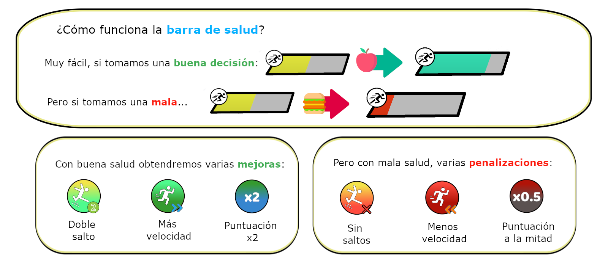
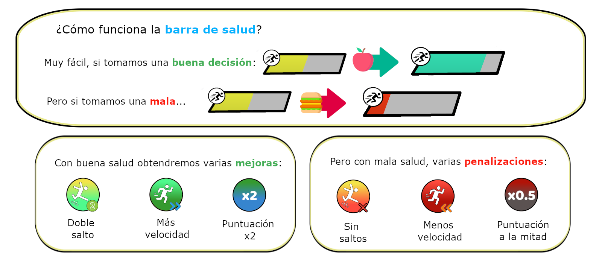
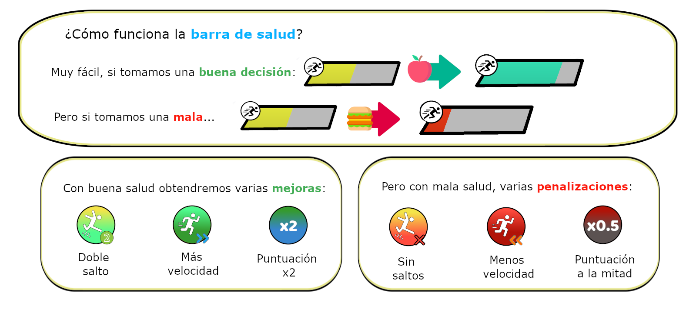

Aquí podemos ver una pequeña galería y vídeo acerca del Trabajo de Fin de Grado Carrera Saludable para entender mejor en que consiste la jugabilidad de este videojuego. En la galería podremos consultar el propio manual que se puede consultar mientras se juega y en el vídeo podremos observar una pequeña demostración de una partida de Carrera Saludable.

Esta demostración constituye una pequeña partida donde se puede ver la generación de pseudoaleatoria de elementos, la interacción del jugador con los objetos que se generan en las diferentes casillas, la interacción con las mejoras que recoge el usuario, las opciones de movilidad del jugador, la ganancia de salud y puntos y como finalizar la partida.
Adicionalmente, se puede contactar via gmail